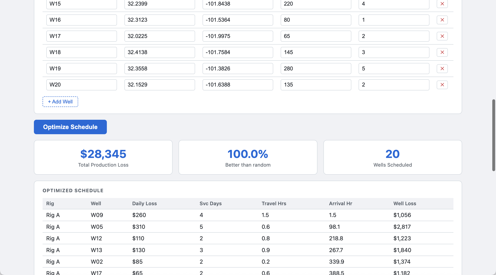
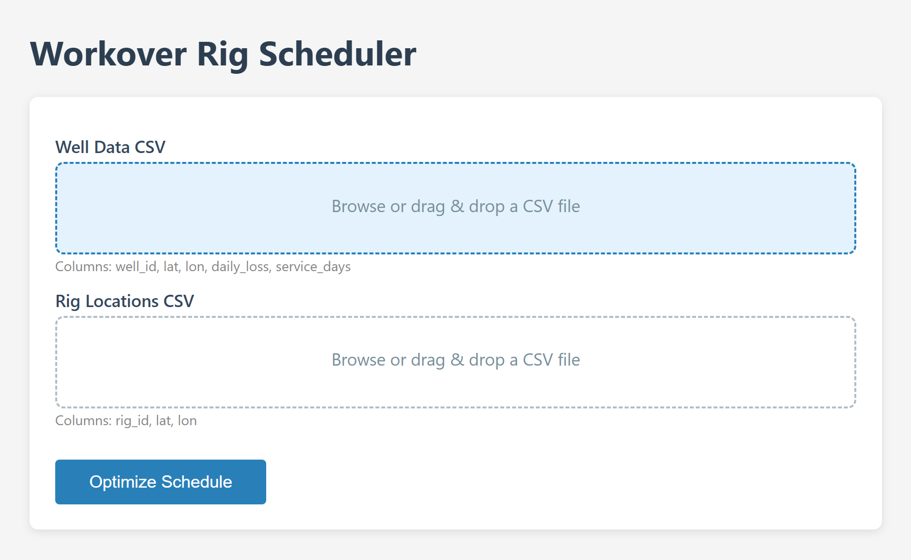
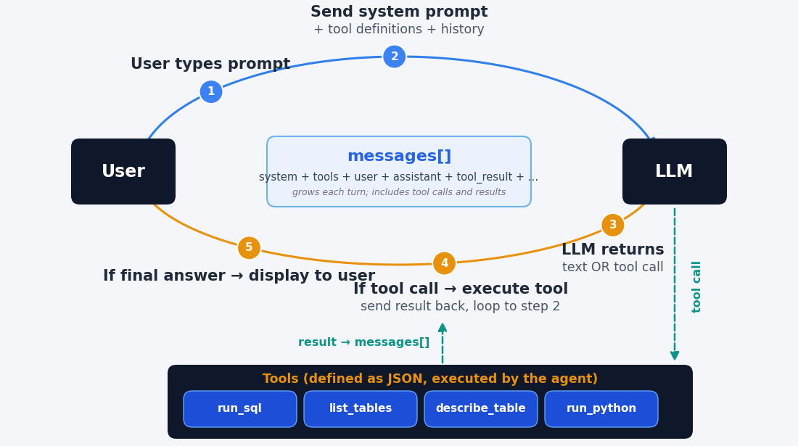
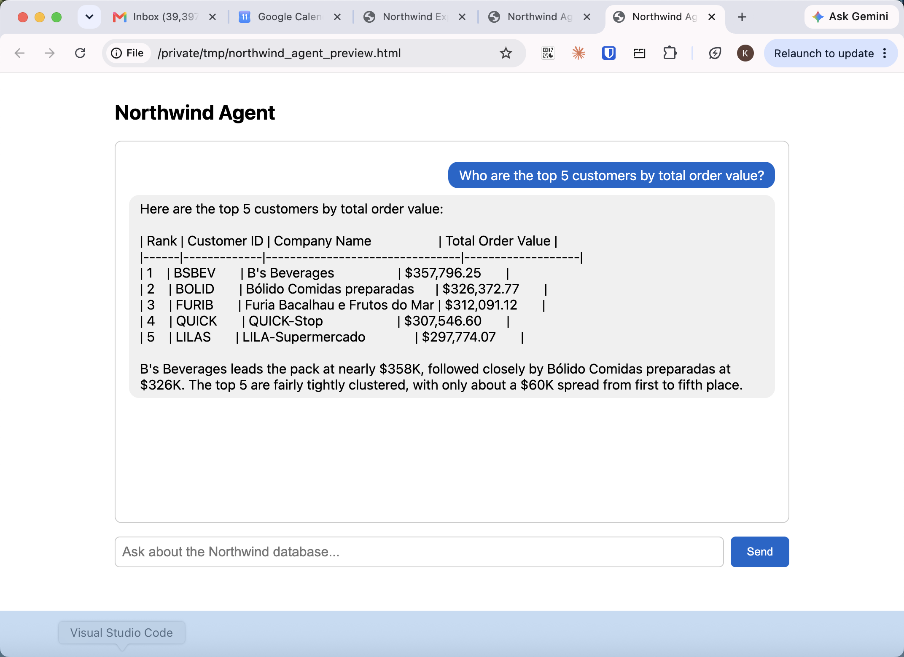

Rice Business 2026
An artifact
A self-contained interactive page Claude builds inside the conversation — a dashboard or calculator you use immediately
An app
A web page with a form and a backend that does real work — upload data, get a schedule, a chart, a report
An agent
An app whose menus are replaced by plain language and a model that decides which tools to use
Students describe what they want; Claude writes the code, runs it, and can put it online. To assign or grade any of this, it helps to know what a piece of software actually is.
Runs in a browser
Looks native, but isn’t
See it yourself
127.0.0.1 — “localhost”
Ports
When you deploy to the cloud, 127.0.0.1 becomes a real domain name — the app code stays the same.
from fastapi import FastAPI
from fastapi.responses import HTMLResponse
app = FastAPI()
@app.get("/")
def home():
return HTMLResponse("<h1>Hello, world!</h1>")Serve it (Claude can do this for you), open 127.0.0.1:8000, and the browser sends “GET /”, the server returns the HTML, and you see “Hello, world!” That is the whole shape of a web app — everything else is more of the same.
What you get
When to use it
No backend, no deployment — everything runs in the browser. Perfect for a self-contained computation that doesn’t need a database.

Python runs inside the browser through WebAssembly (Pyodide). The entire app — form, logic, and charts — lives in one HTML file. No server, no install, nothing for the user to set up.

Upload data, click a button, get back a schedule, a route map, and a chart. The backend runs verified Python; the frontend is a simple upload form and a results page. This is a graded deliverable that either works or it doesn’t.
Chatbot
Agent

The designer holds every dial
An agent is not a different technology. It is a model, a system prompt, and a carefully chosen set of tools — the anatomy from session one, assembled into something that works on its own.

Ask a business question in plain English; the agent writes SQL, runs it against the database, and answers. The guardrail is built in — it is allowed to read the database but never to change it. Students build this against real data.
The pieces
.env fileThe safety dials
The first and best guardrail is a tool the agent simply does not have. If it cannot send email or delete files, no clever prompt can make it.
GitHub Pages — static & Pyodide
index.html, push, turn on Pagesgithub.io address, free, no serverA PaaS — apps & agents
After you create the account, Claude Code can do the rest — build, configure, and deploy. From a laptop to a public link is a short trip.
A student who builds an artifact, an app, or an agent has to decide what it should do and judge whether it works. The building is now easy; the design and the verification are the learning — and the deliverable either runs or it doesn’t.